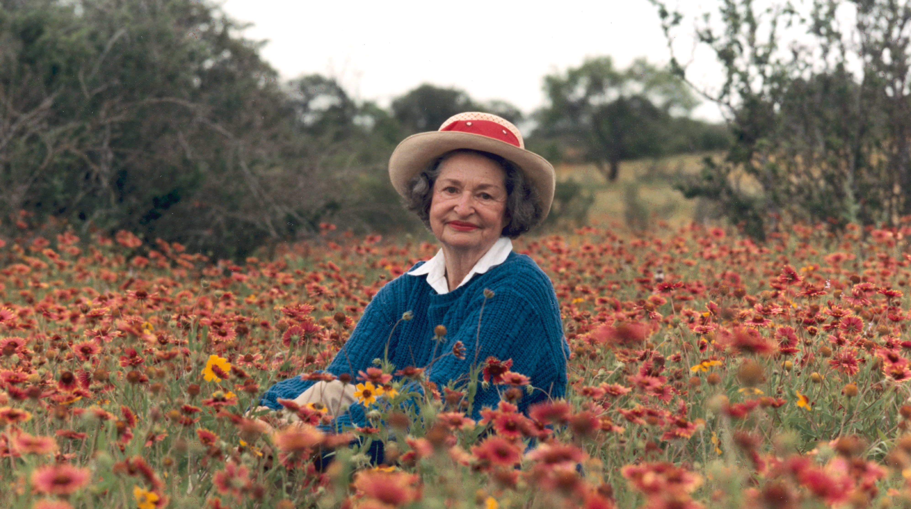

Wildlife
For years I've focused on planting native plants to support our region's pollinators. Every spring and fall I add new host plants for butterfly caterpillars as well as flowers to provide nectar for adult butterflies. Through my art and gardening I hope to educate and inspire suburban home owners to let their lawns go a little wild. Landscape crews that spray poison and use leaf blowers have contributed to the decline of our insect population. But if homeowners stopped some of these practices and planted one patch of flowers, maybe, just maybe we could learn some balance and share our gardens with wildlife again.
Lady Bird Johnson
As a native plant gardener, Lady Bird Johnson is a hero to me. She worked to preserve natural beauty not only through legislation but also through her own personal efforts. In 2014 as an homage to her, I drove from Washington, D.C. to Austin Texas following the route she regularly took while her husband was in office. Bluebonnet season was in full swing when I got there and I got to visit Lady Bird's lifetime of preservation efforts in her beloved Hill Country.
Citizen Science
On a local level check out my Citizen Science Design Project. On a national level some big organizations that host citizen science projects include Audubon, Cornell Lab of Ornithology, and The Xerces Society. Many local groups host bird, bee and butterfly counts through their websites so check around. You may be surprised by how many opportunities you find.